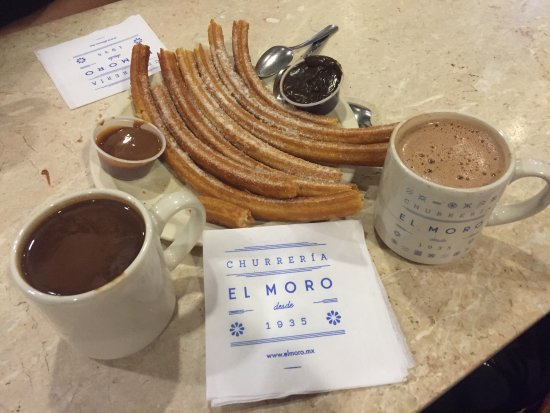
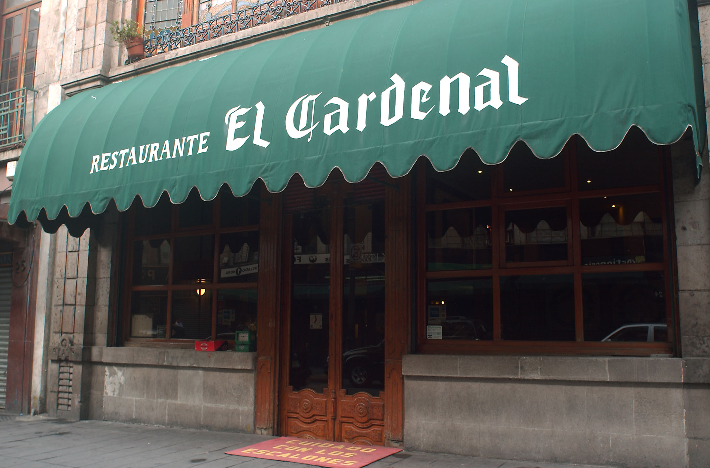
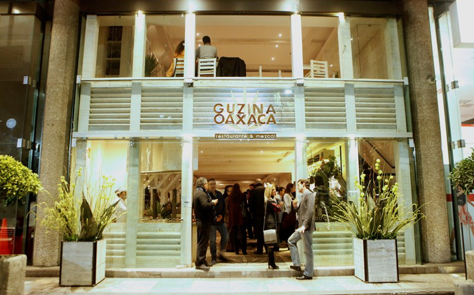

Mexico City Travel Guide
Places to eat
- Churrería El Moro 
- El Cardenal 
- Guzina Oaxaca 
The city is full of trendy, new churrerias, but a classic spot is the way to go for your first time around. The churros, churro ice cream sandwich, and Mexican hot chocolate here are some of the best around. Our grandfather says this place has been the perfect spot for breakfast or a snack since he was a kid, and if you don’t trust our grandfather, you should just stop reading now.
This place serves arguably the best breakfast in the city, in the midst of Centro Historico, a block away from el Zocalo. Before looking at the menu, go ahead and order the nata, which is clotted cream, created from boiling raw milk. Pair it with a concha, a soft sweet pastry bread with a sugar crust. Think of this combo as your breakfast appetizer. Then go crazy with chilaquiles, enchiladas, poached eggs in clay pots, and omelettes with ingredients you’ve probably never heard of. Best to get here early unless you’re well prepared to wait.
The state of Oaxaca is known worldwide as an epicenter of delicious Mexican food. From their traditional cooking methods to their farm-to-table culinary lifestyle, Oaxaca is truly a food paradise. Though quite a way from Oaxaca, Guzina Oaxaca brings the delicious food of this Mexican State to D.F for the people of the city to enjoy. Always fresh and full of flavor, for an authentic Mexican meal in the city, Guzina Oaxaca in Polanco never disappoints.